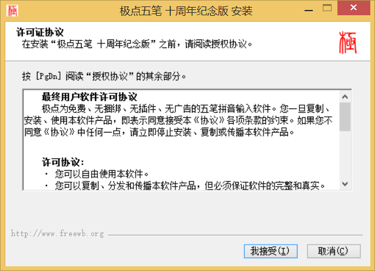
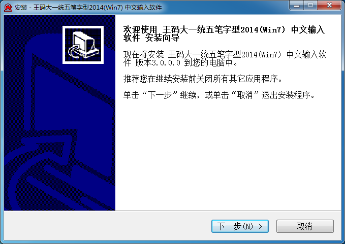
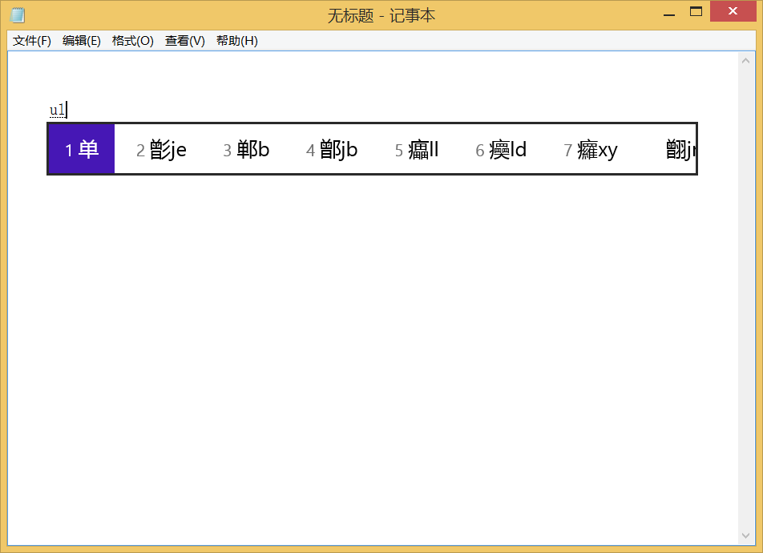
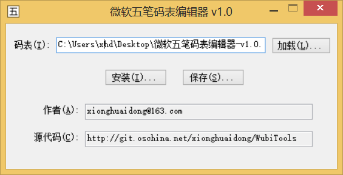
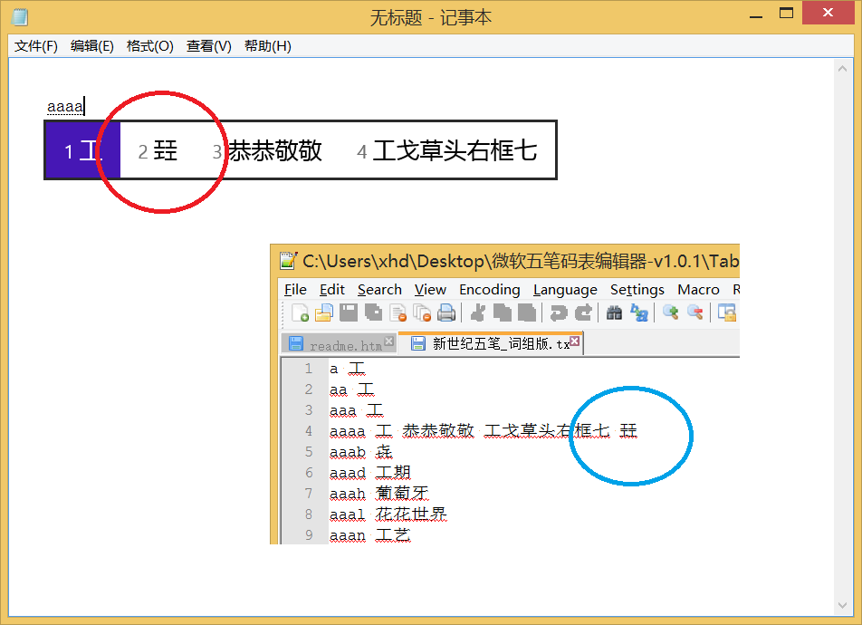

此程序用于替换Windows 8.1/10中微软五笔的码表，以使你可以使用自己习惯的码表。
说明
看下图，作者已将系统码表替换为新世纪五笔单字版。

程序主界面：

用法：
注意：本程序需要.NET Framework 4.5才能运行，请在Windows 8.1/10控制面板中将.NET Framework打开。
注意：安装码表到系统需要在Windows 8.1/10上才能成功，且需要管理员权限。
程序支持加载两格式的码表。
为方便使用，及起示例作用，程序已自带3套五个码表，它们在Tables下面。另外为起备份作用，附带了微软五笔自带的码表，取名ChsWubi.backup.lex/ChsWubiNew.backup.lex。
各码表仅限个人使用，版权归原软件公司所有，不得用于商业目的。
关于符号编码的说明
由于不能以“z”开头，所以将引导标点的“zz”改为“co”。
下面几个字母串后面也有“z”，将它们全部换成“o”：
zzz -> coo
zzzs -> coos
zzzy -> cooy
带声调的a、o、e、i、u和ü原编码长度为5，不支持，因此做以下修改：
zzpya -> copa
zzpye -> cope
zzpyi -> copi
zzpyo -> copo
zzpyu -> copu
zzpyv -> copv
极点自带的“极爽词库4.3版”码表和86、98没有以“co”开头的其他词条，因此上述处理不会引起任何冲突。
新世纪版（包括单字版和词组版）在这两个词条上和符号设置重码了，汉字会显示在前面，标点跟随其后。
copy 䮤
copi 遤 騌
由于不受支持，因此删除了极点生僻字标记（如“囧”原来为“~囧”）和变量（如原来可以用“now”输出当前时间）。
词组版新世纪导入之后发现以下BUG。由于实例太少，没有弄明白是怎么回事，若发现更多类似情况，请通知作者，以找出BUG，改进程序。

版权所有 (c) 2014-2016 熊怀东